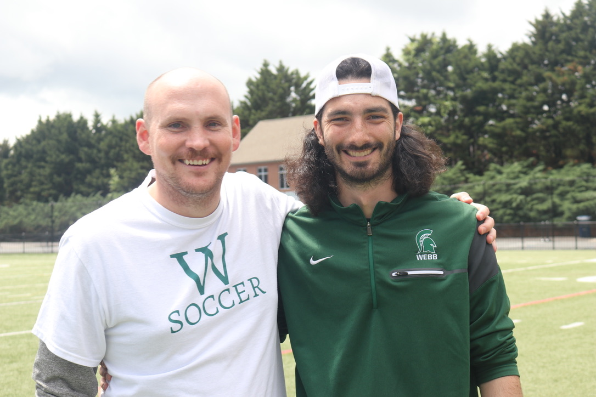

Teaching and coaching mean a lot to me. It was my teachers and coaches in the past who motivated me to be where I am today. They have had a profound impact on me and continue to do so as I continue to think about how teaching and coaching will be a part of my life in my future endeavors.

Keep Going Podcast: This podcast has quite literally changed my life. I am by no means perfect but doing this podcast every week with Pat O, who has made an unbelievably positive impact on my everyday habits, has encouraged life long routines that will see me be healthier and happier forever.

This is my favorite guitar currently. It is my papaw's and he isn't with us anymore. It definitely reminds me of him when I play it and working with him at the deli back in the day.
This is James and I in Australia mate. We took 18 kids with Mrs. Tailor this past summer and it was sick. I could see myself living there honestly!
This was 70s night with the friends. One of my favorite nights all year and makes me miss my long hair a ton!
This is my beautiful woman. Thanks to Spence for putting up with me all these years!